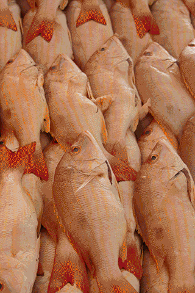

4 personas
Ingredientes:
Preparación
En una cacerola sofría el chorizo, con la cebollla, ajo una vez bien sofrito agregue los bivalvos y cocine por 3 minutos, por otro lado licue el jitomate y alada este licuado y las hierbas pocadas, así como sal, cocine por 4 minutos más y listo.
Sirva en un tazón, acompañe con pan francés y vino rosado.

4 personas
Ingredientes:
Preparación
Los camorones se dejan con cabeza y cáscara. En un refractario se pone una cama de romero fresco hasta cubrir todo el refractario, se ponen los camarones encima, se agregan 2 o 3 copas tequileras de jugo de limón y por cada 2 copas de jugo de limón se agregan 2 copas de aceite de oliva extra virgen; entre los camarones se colocan 2 o 3 dientes de ajo y se adorna con rodajas de limón. El refractario se mete al horno sin tapar y se deja hasta que se periba el olor del romero del horno.
Aparte en una licuadora se agrega la salsa de tomate ragu, las 2 latas de chile chipotle y un poco del jugo del refractario. Esta salsa se agrega en 1 sartén y se sazona la salsa con ajo; se agregan los camarones al sarten para que terminen de cocerse. Se agrega un poco más de sal de grano.

4 personas
Ingredientes:
Aderezo: